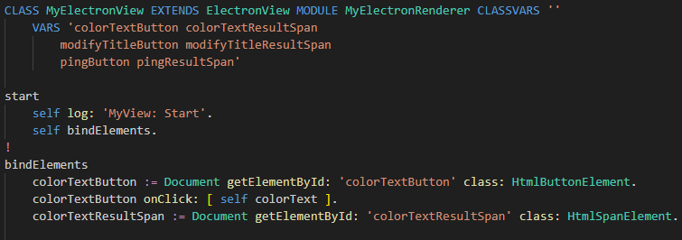
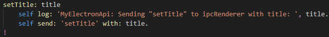
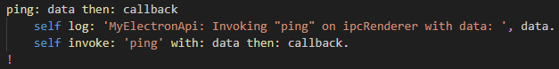
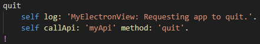

Open the file
src/Browser/MyElectronView.st in VSCode.
The top part looks like this:

Electron apps have a 'renderer' process in which the view is rendered by an embedded browser.
The 'renderer' browser proces is separate from the 'main' Node.js process.
They must communicate through the API loaded in de 'preload' phase of the 'renderer' process.
The ST View class is invoked by Electron through
/src/renderer.ts .
Notice that
MyElectronView inherits from
ElectronView.
The view class is placed in the module
MyElectronView ,
which
must be different from the modules used by the app and the api.
Method
start is called in
renderer.ts.
Notice that the app is structed like a regular web client app.
The view will be composed from the files in the
/web repo folder,
by a Chromium browser engine packaged within Electron.
Scroll down to the method
colorText that looks like this:

This method sets the color of a HTML span directly in the browser.
No API is invoked for this, its just standard browser development.
Scroll down to the method
setTitle that looks like this:

This method calls the API to modify the title in the main app Window,
which, in Electron, is not part of the view.
It does not wait for a response, assuming the request will succeed.
Scroll down to the method
ping that looks like this:

This method calls the API to request data from the main app,
with callback method
onPing: result that handles the response.
The result of the response (always 'Pong') will be displayed in a HTML span element.
Scroll down to the method
quit that looks like this:

This method calls the API with a request to terminate the main app.
It does not provide any arguments and does not wait for a response.
Congratulations
This concludes the tutorial section on Electron.
To make your own Electron app, start by making a copy of this example app.